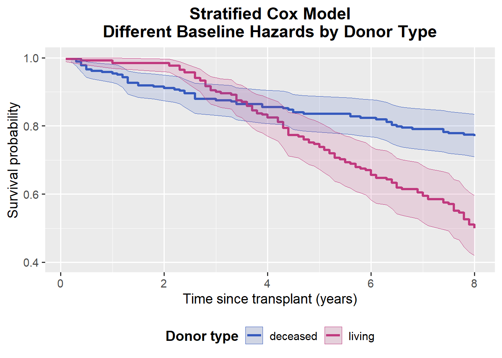
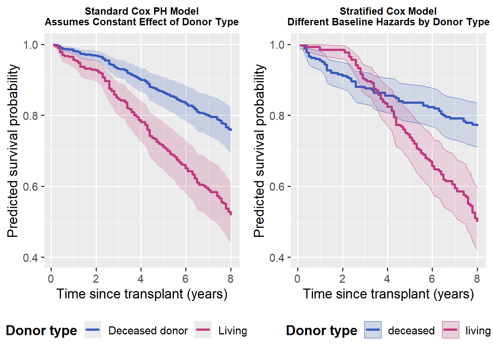

\(h_{0s}(t)\) is the baseline hazard for stratum \(s\)
\(X_1, X_2, \ldots\) are other covariates
What does stratification mean?
If we stratify on a variable (e.g. donor type):
We do not estimate a single hazard ratio for the stratifying variable anymore
(we are not saying “living vs deceased = HR 0.7”)
The stratifying variable is used only to define strata
Each stratum is allowed to have a different baseline risk trajectory over time
In words:
Patients with living donors and patients with deceased donors are allowed to have completely different baseline hazards over time.
What is still estimated?
We still estimate the effects of other covariates (e.g. donor age, recipient sex, eGFR at transplant), assuming those effects are proportional within each stratum.
Note
Stratification is useful when a variable strongly affects baseline risk but does not satisfy the PH assumption.
Stratification can be thought of as:
“Parallel Cox models with different baseline hazards, but the same slopes for the other covariates.”
That is, each group has its own baseline risk over time, but covariate effects are assumed to be the same across groups.
When to Use It
✅ When to use stratification Use stratification when:
The proportional hazards (PH) violation is mainly driven by one categorical variable (e.g. donor type)
You still want to adjust for this variable
But you do not need its hazard ratio as a main result
In this case, the variable is used to define strata rather than being estimated as a coefficient.
❌ When not to use stratification Do not use stratification when:
The stratifying variable is your primary exposure of interest
You need to report a hazard ratio comparing groups
Because once you stratify on a variable (e.g. donor type), you no longer obtain a single hazard ratio comparing those groups.
5 Example: Handling Non-Proportional Hazards Using Stratified Cox Model
We are interested in whether time to graft failure after kidney transplantation differs by donor type (living vs deceased), after adjusting for important clinical factors.
We begin by fitting a standard Cox proportional hazards model, then check the PH assumption. If the PH assumption is violated for any categorical covariate in the model, we refit the model using stratification by that covariate.
Show R code
library(survival)stratified_kidney_data<-read.csv("stratified_kidney_data.CSV")cox_standard <-coxph(Surv(time, status) ~ donor_type + donor_age + recipient_gender + egfr_baseline,data = stratified_kidney_data)#summary(cox_standard)#check the PH assumption first ph_test <-cox.zph(cox_standard)ph_test
A small p-value indicates evidence against the proportional hazards assumption.
Interpretation of PH diagnostics
The proportional hazards assumption is violated for donor type.
Other covariates do not show strong evidence of violation.
The global test is significant, indicating overall non-proportionality.
This suggests that the effect of donor type on graft failure risk changes over time, making the standard Cox model inappropriate.
Stratified Cox model
To address this violation, we fit a stratified Cox model, stratifying on donor type.
We no longer estimate a hazard ratio for donor type.
Donor type is now used only to define separate baseline hazards.
Effects of other covariates are assumed proportional within each stratum.
Interpretation
Within each donor type (living and deceased), we interpret covariate effects as follows:
✅ Donor age
HR ≈ 1.01 (95% CI: 0.997–1.03, P-value=0.14), Not statistically significant.
Within each donor type, donor age shows no strong association with graft failure.
✅ Recipient gender (male)
HR ≈ 1.58 (95% CI: 1.16–2.13, P-value=0.003), Statistically significant. Male recipients have about 58% higher hazard of graft failure compared to females This comparison is within donor type, adjusting for donor age and eGFR.
✅ eGFR at transplant
HR ≈ 0.99 (95% CI: 0.97–1.00, P-value=0.033), Statistically significant. Each 1-unit increase in baseline eGFR is associated with about 1–2% lower hazard of graft failure, within each donor type. To improve interpretability, we can express the effect per 10-unit increase in eGFR:
Interpretation:
Within each donor type, a 10-unit higher eGFR at the time of transplant is associated with approximately a 10% lower hazard of graft failure, after adjusting for donor age and recipient gender.
What about donor type?
Stratifying by donor type allows each group to have its own baseline hazard curve, effectively removing the need to assume a constant hazard ratio over time.
The curves demonstrate that living and deceased donor grafts follow different survival trajectories — exactly what we expect when the PH assumption is violated.
Show R code
# cox_strat is the stratified cox model we fitted in previous chunk sf_strat <-survfit(cox_strat)# Convert survfit to a tidy data frame for ggplotsf_df <-data.frame(time = sf_strat$time,surv = sf_strat$surv,lower = sf_strat$lower,upper = sf_strat$upper,strata =rep(names(sf_strat$strata), sf_strat$strata))# Clean up the stratum labels from "donor_type=deceased" → "deceased"sf_df$strata <-sub("donor_type=", "", sf_df$strata)library(ggplot2)stratified_cox_plot<-ggplot(sf_df, aes(x = time, y = surv, colour = strata)) +geom_step(linewidth =1.2) +geom_ribbon(aes(ymin = lower, ymax = upper, fill = strata),alpha =0.15, linewidth =0) +scale_colour_manual(values =c("deceased"="#365abd", # deep blue"living"="#c0397e"))+# magenta/rosescale_fill_manual(values =c("deceased"="#365abd","living"="#c0397e")) +labs(title ="Stratified Cox Model\nDifferent Baseline Hazards by Donor Type",x ="Time since transplant (years)",y ="Predicted survival probability",colour ="Donor type",fill ="Donor type" ) +coord_cartesian(ylim =c(0.4, 1)) +theme_grey(base_size =14) +theme(plot.title =element_text(face ="bold", hjust =0.5),legend.position ="bottom",legend.title =element_text(face ="bold") )stratified_cox_plot

Why Ignoring PH Violations Can Be Misleading
If we ignore the violation of the proportional hazards (PH) assumption and proceed with a standard Cox model, we may obtain a single hazard ratio that does not accurately reflect how risk changes over time.
This can lead to misleading conclusions, as the estimated effect represents an average over follow-up rather than the true time-varying relationship.
This is illustrated in the plot below, where the separation between groups is clearly not constant over time.
Show R code
#data preparation for plot new_deceased <-data.frame(donor_type =factor("deceased", levels =levels(as.factor(stratified_kidney_data$donor_type))),donor_age =mean(stratified_kidney_data$donor_age, na.rm =TRUE),recipient_gender =factor("female", levels =levels(as.factor(stratified_kidney_data$recipient_gender))),egfr_baseline =mean(stratified_kidney_data$egfr_baseline, na.rm =TRUE))new_living <-data.frame(donor_type =factor("living", levels =levels(as.factor(stratified_kidney_data$donor_type))),donor_age =mean(stratified_kidney_data$donor_age, na.rm =TRUE),recipient_gender =factor("female", levels =levels(as.factor(stratified_kidney_data$recipient_gender))),egfr_baseline =mean(stratified_kidney_data$egfr_baseline, na.rm =TRUE))sf_deceased <-survfit(cox_standard, newdata = new_deceased)sf_living <-survfit(cox_standard, newdata = new_living)df_dec <-data.frame(time = sf_deceased$time,surv = sf_deceased$surv,lower = sf_deceased$lower,upper = sf_deceased$upper,donor_type ="Deceased donor")df_liv <-data.frame(time = sf_living$time,surv = sf_living$surv,lower = sf_living$lower,upper = sf_living$upper,donor_type ="Living donor")df_ph <-rbind(df_dec, df_liv)standard_cox_plot<-ggplot(df_ph, aes(x = time, y = surv, colour = donor_type, fill = donor_type)) +# CI ribbongeom_ribbon(aes(ymin = lower, ymax = upper),alpha =0.2,colour =NA,show.legend =FALSE) +# Step survival curvegeom_step(linewidth =1.2) +# Manual colours for consistency across slidesscale_colour_manual(values =c("Deceased donor"="#365abd", # blue"Living donor"="#c0397e") # magenta/rose ) +scale_fill_manual(values =c("Deceased donor"="#365abd","Living donor"="#c0397e") ) +# Axis labels and titlelabs(title ="Standard Cox PH Model\nAssumes Constant Effect of Donor Type",x ="Time since transplant (years)",y ="Predicted survival probability",colour ="Donor type" ) +# y-axis from 0.4 to 1.0coord_cartesian(ylim =c(0.4, 1.0)) +# Use grey theme with gridlinestheme_grey(base_size =14) +theme(plot.title =element_text(face ="bold", hjust =0.5),legend.position ="bottom",legend.title =element_text(face ="bold") )library(gridExtra)library(ggplot2)# Reduce title size for each plotstandard_cox_plot_small <- standard_cox_plot +theme(plot.title =element_text(size =10))stratified_cox_plot_small <- stratified_cox_plot +theme(plot.title =element_text(size =10))# Arrange side by sidegrid.arrange( standard_cox_plot_small, stratified_cox_plot_small,ncol =2)

6 Including Time-Varying Effects
When the proportional hazards (PH) assumption is violated, stratification is not the only solution.
In some settings, we still want to:
Keep the covariate in the model
Obtain an explicit effect estimate
Allow the effect to change over time
This leads to a time-varying coefficient Cox model.
When to Use Time-Varying Effects
Use a time-varying effect when:
The PH assumption is violated for a variable (e.g. donor type)
The variable is scientifically important
You believe the effect itself changes over time
For example:
Early after transplant, living donors may be protective
This allows the hazard ratio for \(X_1\) to vary with time.
Intuition
Instead of assuming the two groups keep the same relative risk forever,
we allow the risk difference between groups to change over time.
When to Use It
You detect a proportional hazards (PH) violation for a variable (e.g. donor type) but you still want an explicit effect estimate, rather than stratifying it away.
For example:
Early after transplant, living donors may be protective
We interpret the results of the time-varying coefficient Cox model as follows:
✅ Donor type (living vs deceased) — baseline effect
HR ≈ 0.50 (95% CI: 0.25–1.01, P-value ≈ 0.05).
At the start of follow-up (when \(\log(t) \approx 0\)), recipients of a living donor kidney have about a 50% lower hazard of graft failure compared to recipients of deceased-donor kidneys.
This represents the early effect of donor type.
✅ Time-varying effect of donor type (tt(donor_live))
HR ≈ 3.53 (95% CI: 2.15–5.79, P-value < 0.001), Statistically significant.
The effect of living donor changes significantly over time.
For each one-unit increase in \(\log(t)\), the hazard ratio increases by a factor of about 3.5.
Interpretation:
The early protective effect of living donation diminishes as time goes on, explaining why a single constant hazard ratio would be misleading.
✅ Donor age
HR ≈ 1.01 (95% CI: 1.00–1.03, P-value = 0.14), Not statistically significant.
Donor age shows a small, non-significant trend toward higher hazard of graft failure.
✅ Recipient gender (male vs female)
HR ≈ 1.58 (95% CI: 1.16–2.13, P-value = 0.003), Statistically significant.
Male recipients have about a 58% higher hazard of graft failure compared to females, adjusting for donor age, donor type, and baseline eGFR.
✅ Baseline eGFR
HR ≈ 0.99 (95% CI: 0.97–1.00, P-value = 0.032), Statistically significant.
Each 1-unit increase in baseline eGFR is associated with about a 1–2% lower hazard of graft failure.
To improve interpretability, we can express the effect per 10-unit increase in eGFR:
Interpretation:
Within donor type, a 10-unit higher baseline eGFR at transplant is associated with approximately a 10% lower hazard of graft failure, after adjusting for other covariates.
Overall interpretation:
The time-varying Cox model shows that the effect of donor type is strongest early after transplant and weakens over time, while recipient gender and baseline kidney function remain important predictors of graft failure.
Early follow-up: HR < 1 → protective effect of living donors
Later follow-up: HR increases and may exceed 1
Uncertainty increases at longer follow-up due to fewer events
The HR steadily increases and crosses 1 after roughly 1–2 years, indicating the early survival advantage of living donors diminishes.
By 5–8 years, the HR > 2–3, suggesting higher hazard among living-donor grafts in the later period.
The confidence band widens with time because there are fewer events and greater uncertainty at longer follow-up.
8 Extended Cox Model
Before introducing the extended Cox model, it is important to distinguish between time-fixed covariates and time-varying covariates.
Time-Fixed vs Time-Varying Covariates
Time-Fixed Covariates:
A time-fixed covariate is measured once (usually at baseline) and assumed to remain constant throughout follow-up.
Examples:
Donor type
Sex
Age at transplant
Baseline eGFR
Time-Varying Covariates:
A time-varying covariate is a variable whose value itself changes over time.
Examples:
eGFR measured repeatedly after transplant
Blood pressure
Medication use
Biomarkers measured at follow-up visits
Warning
Time-varying covariates are different from time-varying effects.
Time-varying effect: the coefficient changes with time
Time-varying covariate: the value of the covariate changes with time
Why Time-Varying Covariates Can Cause PH Violation
If we treat a changing covariate as fixed at baseline:
We ignore important changes in a patient’s risk profile
The model may show non-proportional hazards
Early and late risks are incorrectly averaged
For example:
eGFR at transplant may be similar between patients
Over time, eGFR may decline at different rates
Current kidney function is more relevant than baseline eGFR
Extended Cox Model (Time-Varying Covariates)
The extended Cox model explicitly allows covariate values to change over time.
Intuition
Split each subject’s follow-up into time intervals
Update the covariate value within each interval
Model the hazard using the current covariate value
Why this addresses PH violation:
PH was violated partly because “risk profile changes over time.”
The extended Cox model explicitly updates the covariates over time instead of pretending they’re frozen at baseline.
This is different from stratification and different from adding x × time: here the value itself is time-dependent.
We interpret the results of the extended Cox model (time-varying covariates) as follows:
✅ Current eGFR
HR ≈ 0.92 (95% CI: 0.86–0.98, P-value = 0.01), Statistically significant.
Each 1 mL/min/1.73 m² higher current eGFR is associated with about an 8% lower instantaneous hazard of graft failure, holding donor type, donor age, and recipient gender constant.
This means that the patient’s current kidney function, rather than baseline eGFR, is strongly predictive of graft failure risk.
✅ Donor type (living vs deceased)
HR ≈ 1.28 (95% CI: 0.24–6.83, P-value = 0.77), Not statistically significant.
Once time-updated eGFR is included in the model, there is no evidence of a direct effect of donor type on graft failure.
Interpretation:
The apparent advantage of living donors observed earlier appears to operate through better kidney function over time, rather than through an independent direct effect.
✅ Donor age
HR ≈ 1.03 (95% CI: 0.97–1.09, P-value = 0.39), Not statistically significant.
There is no strong evidence that donor age is associated with graft failure once current eGFR and other covariates are accounted for.
✅ Recipient gender (male vs female)
HR ≈ 1.36 (95% CI: 0.45–4.10, P-value = 0.58), Not statistically significant.
After adjusting for time-updated eGFR and other covariates, there is no clear evidence of a gender difference in graft failure risk.
Overall interpretation:
The extended Cox model highlights that time-updated eGFR is the dominant predictor of graft failure.
Accounting for changes in kidney function over time substantially alters the interpretation of other covariate effects and provides a more realistic representation of evolving risk.
Interpretation of Predicted Survival by Current eGFR Level
The extended Cox model allows us to interpret graft survival conditional on the current level of kidney function, updated over time.
✅ eGFR = 90 (green)
Predicted graft survival is very stable over time.
The survival curve remains close to 1.0, indicating that patients maintaining this level of kidney function have a very low risk of graft failure throughout follow-up.
✅ eGFR = 60 (orange)
Graft survival remains high, although slightly lower than at eGFR = 90.
The probability of graft survival stays above 95% over 8 years, suggesting a modest increase in risk, but overall good long-term outcomes.
✅ eGFR = 30 (red)
Graft survival is markedly reduced.
The survival curve declines more steeply, showing a pronounced increase in the risk of graft loss over time.
This highlights low current eGFR as a strong indicator of poor prognosis.
Overall interpretation:
In the extended Cox model, current eGFR is a powerful, time-updated predictor of graft survival.
Lower eGFR values are associated with substantially worse survival trajectories, reinforcing the importance of modelling kidney function as a time-varying covariate rather than a baseline-only measure.
Warning
The extended Cox model treats time-varying covariates as external.
If the covariate is influenced by the underlying disease process (e.g. declining eGFR because the graft is failing), this assumption may be violated.
🧠 Think about the following before moving on:
What if the decline in eGFR over time reflects underlying changes in other clinical factors, rather than acting as an isolated predictor?
And those same variables may also affect the risk of graft failure.
If a time-dependent covariate both predicts the event and is affected by the underlying disease process, is an extended Cox model still appropriate?
Source Code
---title: "Lecture 3: Cox model when PH assumption is violated"toc: truetoc-depth: 3---```{r, echo=FALSE}knitr::opts_chunk$set( message = FALSE, warning = FALSE)```## Learning Objectives::: callout-noteBy the end of this lecture, you should be able to:- Recognise when the **proportional hazards (PH) assumption** is violated- Understand different strategies to handle non-PH: - Stratified Cox model - Time-varying effects - Extended Cox with time-varying covariates- Understand when a **joint model** is needed:::## Reminder: Proportional Hazards AssumptionThe Cox model assumes that **hazard ratios are constant over time**.This means that if one group has higher risk than another at the beginning,it has the same *relative* risk later in follow-up.::: {.callout-note}If this assumption does not hold, the estimated hazard ratio from a standard Cox modelmay be misleading.:::## What If Proportional Hazards Does Not Hold?There are several approaches when PH is violated:1. **Stratified Cox model:** allow baseline hazards to differ by group.2. **Include time-varying effect:** model changing effects over time, include interaction between covariate and time (e.g. $𝑥×𝑡$). 3. **Use extended Cox model:** allow a covariate’s value itself to change over time.## Stratified Cox modelWhen the proportional hazards (PH) assumption is violated for a categorical variable, one option is a **stratified Cox model**.A stratified Cox model can be written as:$$h_s(t \mid X) = h_{0s}(t)\,\exp(\beta_1 X_1 + \beta_2 X_2 + \cdots)$$where:- $s$ is the stratum (e.g. donor type)- $h_{0s}(t)$ is the **baseline hazard for stratum $s$**- $X_1, X_2, \ldots$ are other covariates **What does stratification mean?** If we stratify on a variable (e.g. **donor type**):- We **do not estimate a single hazard ratio** for the stratifying variable anymore (we are not saying “living vs deceased = HR 0.7”)- The stratifying variable is used only to **define strata**- Each stratum is allowed to have a **different baseline risk trajectory** over timeIn words:> Patients with living donors and patients with deceased donors are allowed to have completely different baseline hazards over time.**What is still estimated?** We still estimate the effects of other covariates (e.g. donor age, recipient sex, eGFR at transplant), assuming those effects are **proportional within each stratum**.::: {.callout-note}Stratification is useful when a variable strongly affects baseline risk but does not satisfy the PH assumption.:::Stratification can be thought of as:> **“Parallel Cox models with different baseline hazards, but the same slopes for the other covariates.”**That is, each group has its own baseline risk over time, but covariate effects are assumed to be the same across groups.::: {.callout-tip}### When to Use It✅ **When to use stratification**Use stratification when:- The proportional hazards (PH) violation is mainly driven by **one categorical variable** (e.g. donor type)- You still want to **adjust for this variable**- But you do **not need its hazard ratio** as a main resultIn this case, the variable is used to define strata rather than being estimated as a coefficient.❌ **When not to use stratification**Do **not** use stratification when:- The stratifying variable is your **primary exposure of interest**- You need to report a **hazard ratio comparing groups**Because once you stratify on a variable (e.g. donor type), you **no longer obtain a single hazard ratio** comparing those groups.:::## Example: Handling Non-Proportional Hazards Using Stratified Cox ModelWe are interested in whether time to graft failure after kidney transplantation differs by donor type (living vs deceased), after adjusting for important clinical factors.We begin by fitting a standard Cox proportional hazards model, then check the PH assumption.If the PH assumption is violated for any categorical covariate in the model, we refit the model using stratification by that covariate.```{r, message=FALSE, warning=FALSE}library(survival)stratified_kidney_data<-read.csv("stratified_kidney_data.CSV")cox_standard <- coxph( Surv(time, status) ~ donor_type + donor_age + recipient_gender + egfr_baseline, data = stratified_kidney_data)#summary(cox_standard)#check the PH assumption first ph_test <- cox.zph(cox_standard)ph_testplot(ph_test)```::: {.callout-note}A small p-value indicates evidence against the proportional hazards assumption.:::**Interpretation of PH diagnostics** The proportional hazards assumption is violated for donor type. Other covariates do not show strong evidence of violation. The global test is significant, indicating overall non-proportionality. This suggests that the effect of donor type on graft failure risk changes over time, making the standard Cox model inappropriate. **Stratified Cox model** To address this violation, we fit a stratified Cox model, stratifying on donor type.```{r, message=FALSE, warning=FALSE}library(survival)cox_strat <- coxph(Surv(time, status) ~ donor_age + recipient_gender + egfr_baseline +strata(donor_type),data = stratified_kidney_data)summary(cox_strat)```::: {.callout-note}- We no longer estimate a hazard ratio for donor type.- Donor type is now used only to define separate baseline hazards.- Effects of other covariates are assumed proportional within each stratum.:::::: {.callout-tip}### Interpretation Within each donor type (living and deceased), we interpret covariate effects as follows:✅ Donor age HR ≈ 1.01 (95% CI: 0.997–1.03, P-value=0.14), Not statistically significant. Within each donor type, donor age shows no strong association with graft failure.✅ Recipient gender (male)HR ≈ 1.58 (95% CI: 1.16–2.13, P-value=0.003), Statistically significant.Male recipients have about 58% higher hazard of graft failure compared to femalesThis comparison is within donor type, adjusting for donor age and eGFR.✅ eGFR at transplantHR ≈ 0.99 (95% CI: 0.97–1.00, P-value=0.033), Statistically significant.Each 1-unit increase in baseline eGFR is associated with about 1–2% lower hazard of graft failure, within each donor type.To improve interpretability, we can express the effect per **10-unit increase** in eGFR:$$HR_{10\text{-unit}} = 0.99^{10} \approx 0.90$$**Interpretation:** Within each donor type, a 10-unit higher eGFR at the time of transplant is associated with approximately a **10% lower hazard of graft failure**, after adjusting for donor age and recipient gender.:::::: {.callout-tip}### What about donor type?Stratifying by donor type allows each group to have its own baseline hazard curve, effectively removing the need to assume a constant hazard ratio over time. The curves demonstrate that living and deceased donor grafts follow different survival trajectories — exactly what we expect when the PH assumption is violated.:::```{r, message=FALSE, warning=FALSE}# cox_strat is the stratified cox model we fitted in previous chunk sf_strat <- survfit(cox_strat)# Convert survfit to a tidy data frame for ggplotsf_df <- data.frame( time = sf_strat$time, surv = sf_strat$surv, lower = sf_strat$lower, upper = sf_strat$upper, strata = rep(names(sf_strat$strata), sf_strat$strata))# Clean up the stratum labels from "donor_type=deceased" → "deceased"sf_df$strata <- sub("donor_type=", "", sf_df$strata)library(ggplot2)stratified_cox_plot<-ggplot(sf_df, aes(x = time, y = surv, colour = strata)) + geom_step(linewidth = 1.2) + geom_ribbon(aes(ymin = lower, ymax = upper, fill = strata), alpha = 0.15, linewidth = 0) + scale_colour_manual(values = c("deceased" = "#365abd", # deep blue "living" = "#c0397e"))+ # magenta/rose scale_fill_manual(values = c("deceased" = "#365abd", "living" = "#c0397e")) + labs( title = "Stratified Cox Model\nDifferent Baseline Hazards by Donor Type", x = "Time since transplant (years)", y = "Predicted survival probability", colour = "Donor type", fill = "Donor type" ) + coord_cartesian(ylim = c(0.4, 1)) + theme_grey(base_size = 14) + theme( plot.title = element_text(face = "bold", hjust = 0.5), legend.position = "bottom", legend.title = element_text(face = "bold") )stratified_cox_plot```::: {.callout-warning}### Why Ignoring PH Violations Can Be MisleadingIf we ignore the violation of the proportional hazards (PH) assumption and proceed with a standard Cox model, we may obtain a single hazard ratio that does **not accurately reflect how risk changes over time**.This can lead to misleading conclusions, as the estimated effect represents an average over follow-up rather than the true time-varying relationship.This is illustrated in the plot below, where the separation between groups is clearly **not constant over time**.:::```{r, message=FALSE, warning=FALSE}#data preparation for plot new_deceased <- data.frame( donor_type = factor("deceased", levels = levels(as.factor(stratified_kidney_data$donor_type))), donor_age = mean(stratified_kidney_data$donor_age, na.rm = TRUE), recipient_gender = factor("female", levels = levels(as.factor(stratified_kidney_data$recipient_gender))), egfr_baseline = mean(stratified_kidney_data$egfr_baseline, na.rm = TRUE))new_living <- data.frame( donor_type = factor("living", levels = levels(as.factor(stratified_kidney_data$donor_type))), donor_age = mean(stratified_kidney_data$donor_age, na.rm = TRUE), recipient_gender = factor("female", levels = levels(as.factor(stratified_kidney_data$recipient_gender))), egfr_baseline = mean(stratified_kidney_data$egfr_baseline, na.rm = TRUE))sf_deceased <- survfit(cox_standard, newdata = new_deceased)sf_living <- survfit(cox_standard, newdata = new_living)df_dec <- data.frame( time = sf_deceased$time, surv = sf_deceased$surv, lower = sf_deceased$lower, upper = sf_deceased$upper, donor_type = "Deceased donor")df_liv <- data.frame( time = sf_living$time, surv = sf_living$surv, lower = sf_living$lower, upper = sf_living$upper, donor_type = "Living donor")df_ph <- rbind(df_dec, df_liv)standard_cox_plot<-ggplot(df_ph, aes(x = time, y = surv, colour = donor_type, fill = donor_type)) + # CI ribbon geom_ribbon(aes(ymin = lower, ymax = upper), alpha = 0.2, colour = NA, show.legend = FALSE) + # Step survival curve geom_step(linewidth = 1.2) + # Manual colours for consistency across slides scale_colour_manual( values = c("Deceased donor" = "#365abd", # blue "Living donor" = "#c0397e") # magenta/rose ) + scale_fill_manual( values = c("Deceased donor" = "#365abd", "Living donor" = "#c0397e") ) + # Axis labels and title labs( title = "Standard Cox PH Model\nAssumes Constant Effect of Donor Type", x = "Time since transplant (years)", y = "Predicted survival probability", colour = "Donor type" ) + # y-axis from 0.4 to 1.0 coord_cartesian(ylim = c(0.4, 1.0)) + # Use grey theme with gridlines theme_grey(base_size = 14) + theme( plot.title = element_text(face = "bold", hjust = 0.5), legend.position = "bottom", legend.title = element_text(face = "bold") )library(gridExtra)library(ggplot2)# Reduce title size for each plotstandard_cox_plot_small <- standard_cox_plot + theme(plot.title = element_text(size = 10))stratified_cox_plot_small <- stratified_cox_plot + theme(plot.title = element_text(size = 10))# Arrange side by sidegrid.arrange( standard_cox_plot_small, stratified_cox_plot_small, ncol = 2)```## Including Time-Varying EffectsWhen the proportional hazards (PH) assumption is violated, **stratification is not the only solution**.In some settings, we still want to:- **Keep the covariate in the model**- **Obtain an explicit effect estimate**- **Allow the effect to change over time**This leads to a **time-varying coefficient Cox model**. **When to Use Time-Varying Effects** Use a time-varying effect when:- The PH assumption is violated for a variable (e.g. **donor type**)- The variable is scientifically important- You believe the **effect itself changes over time**For example:- Early after transplant, **living donors may be protective**- Later, that advantage may **diminish or reverse****Model Idea** In the **standard Cox model**:$$h(t \mid X) = h_0(t)\exp(\beta_1 X_1 + \beta_2 X_2 + \cdots)$$the coefficients ($\beta$) are assumed to be **constant over time**, which leads to the **proportional hazards (PH) assumption**.If a covariate’s effect **changes over time**, we can allow its coefficient to depend on time:$$h(t \mid X) = h_0(t)\exp\left(\beta_1(t) X_1 + \beta_2 X_2 + \cdots\right)$$This allows the **hazard ratio for $X_1$ to vary with time**.:::{.callout-note}### IntuitionInstead of assuming the two groups keep the same relative risk forever, we allow the **risk difference between groups to change over time**.:::::: {.callout-tip}### When to Use It- You detect a **proportional hazards (PH) violation** for a variable (e.g. **donor type**) but you **still want an explicit effect estimate**, rather than stratifying it away.- For example: - **Early after transplant**, living donors may be **protective** - **Later**, that advantage may **diminish or reverse**:::## Example: Time-Varying Effect of Donor TypeWe return to the kidney transplant example:- **Outcome:** time to graft failure - **Exposure:** donor type (living vs deceased) - **Covariates:** donor age, recipient gender, baseline eGFR Previously, we showed that **donor type violates the PH assumption**.We introduce an **interaction between the covariate and time**, most commonly:- **donor type × log(time)** - **donor type × time**This allows the model to estimate **how the effect changes with time**.The Cox model becomes:$$h(t) = h_0(t)\exp\left[\beta_1 \,\text{donor\_type} + \beta_2 \left(\text{donor\_type} \times \log(t)\right) + \cdots \right]$$Where:- $\beta_1$ represents the **baseline (early) effect** of donor type - $\beta_2$ represents **how that effect changes over time**```{r, message=FALSE, warning=FALSE}library(survival)kidney_violate <- read.csv("stratified_kidney_data.csv")kidney_violate$donor_live <- ifelse(kidney_violate$donor_type == "living", 1, 0)cox_timevary <- coxph( Surv(time, status) ~ donor_live + donor_age + recipient_gender + egfr_baseline + tt(donor_live), data = kidney_violate, tt = function(x, t, ...) { x * log(t + 0.01) })summary(cox_timevary)```::: {.callout-note}- donor_live represents the baseline effect - tt(donor_live) allows the effect to change with time - $\log(t)$ captures gradual, nonlinear change :::**Visualising the Time-Varying Hazard Ratio**```{r, message=FALSE, warning=FALSE}library(ggplot2)b <- coef(cox_timevary)v <- vcov(cox_timevary)beta1 <- b["donor_live"]beta2 <- b["tt(donor_live)"]var_beta1 <- v["donor_live", "donor_live"]var_beta2 <- v["tt(donor_live)", "tt(donor_live)"]cov_b1b2 <- v["donor_live", "tt(donor_live)"]t_seq <- seq(0.5, 8, by = 0.1)log_t <- log(t_seq + 0.01)lp <- beta1 + beta2 * log_tvar_lp <- var_beta1 + (log_t^2) * var_beta2 + 2 * log_t * cov_b1b2se_lp <- sqrt(var_lp)hr_df <- data.frame( time = t_seq, HR = exp(lp), lower = exp(lp - 1.96 * se_lp), upper = exp(lp + 1.96 * se_lp))ggplot(hr_df, aes(x = time, y = HR)) + geom_ribbon(aes(ymin = lower, ymax = upper), alpha = 0.2, fill = "#c75b87") + geom_line(linewidth = 1.2, colour = "#c75b87") + geom_hline(yintercept = 1, linetype = "dashed", colour = "grey50") + labs( title = "Time-varying effect of donor type", subtitle = "Hazard ratio: living vs deceased donor", x = "Time since transplant (years)", y = "Hazard ratio" ) + theme_grey(base_size = 14) + theme( plot.title = element_text(face = "bold", hjust = 0.5), plot.subtitle = element_text(hjust = 0.5), panel.grid.minor = element_blank() )```::: {.callout-tip}### InterpretationWe interpret the results of the **time-varying coefficient Cox model** as follows:✅ **Donor type (living vs deceased) — baseline effect**HR ≈ 0.50 (95% CI: 0.25–1.01, P-value ≈ 0.05). At the **start of follow-up** (when $\log(t) \approx 0$), recipients of a **living donor** kidney have about a **50% lower hazard** of graft failure compared to recipients of deceased-donor kidneys.This represents the **early effect** of donor type.---✅ **Time-varying effect of donor type** (`tt(donor_live)`)HR ≈ 3.53 (95% CI: 2.15–5.79, P-value < 0.001), **Statistically significant**. The effect of **living donor changes significantly over time**. For each one-unit increase in $\log(t)$, the hazard ratio increases by a factor of about **3.5**.**Interpretation:** The early protective effect of living donation **diminishes as time goes on**, explaining why a single constant hazard ratio would be misleading.---✅ **Donor age**HR ≈ 1.01 (95% CI: 1.00–1.03, P-value = 0.14), **Not statistically significant**. Donor age shows a small, non-significant trend toward higher hazard of graft failure.---✅ **Recipient gender (male vs female)**HR ≈ 1.58 (95% CI: 1.16–2.13, P-value = 0.003), **Statistically significant**. Male recipients have about a **58% higher hazard** of graft failure compared to females, adjusting for donor age, donor type, and baseline eGFR.---✅ **Baseline eGFR**HR ≈ 0.99 (95% CI: 0.97–1.00, P-value = 0.032), **Statistically significant**. Each 1-unit increase in baseline eGFR is associated with about a **1–2% lower hazard** of graft failure.To improve interpretability, we can express the effect per **10-unit increase** in eGFR:$$HR_{10\text{-unit}} = 0.99^{10} \approx 0.90$$**Interpretation:** Within donor type, a 10-unit higher baseline eGFR at transplant is associated with approximately a **10% lower hazard of graft failure**, after adjusting for other covariates.---**Overall interpretation:** The time-varying Cox model shows that the **effect of donor type is strongest early after transplant and weakens over time**, while recipient gender and baseline kidney function remain important predictors of graft failure.Early follow-up: HR < 1 → protective effect of living donorsLater follow-up: HR increases and may exceed 1Uncertainty increases at longer follow-up due to fewer eventsThe HR steadily increases and crosses 1 after roughly 1–2 years, indicating the early survival advantage of living donors diminishes. By 5–8 years, the HR > 2–3, suggesting higher hazard among living-donor grafts in the later period. The confidence band widens with time because there are fewer events and greater uncertainty at longer follow-up. :::## Extended Cox ModelBefore introducing the **extended Cox model**, it is important to distinguish between**time-fixed covariates** and **time-varying covariates**.::: {.callout-note}### Time-Fixed vs Time-Varying Covariates**Time-Fixed Covariates:** A **time-fixed covariate** is measured once (usually at baseline) and assumed to remainconstant throughout follow-up.Examples:- **Donor type**- **Sex**- **Age at transplant**- **Baseline eGFR****Time-Varying Covariates:**A **time-varying covariate** is a variable whose **value itself changes over time**.Examples:- **eGFR measured repeatedly after transplant**- **Blood pressure**- **Medication use**- **Biomarkers measured at follow-up visits**:::::: {.callout-warning}Time-varying covariates are different from **time-varying effects**.- **Time-varying effect:** the *coefficient* changes with time - **Time-varying covariate:** the *value of the covariate* changes with time:::**Why Time-Varying Covariates Can Cause PH Violation** If we treat a changing covariate as fixed at baseline:- We ignore important changes in a patient’s risk profile- The model may show **non-proportional hazards**- Early and late risks are incorrectly averagedFor example:- eGFR at transplant may be similar between patients- Over time, eGFR may decline at different rates- Current kidney function is more relevant than baseline eGFR**Extended Cox Model (Time-Varying Covariates)** The **extended Cox model** explicitly allows covariate values to change over time.::: {.callout-note}### Intuition- Split each subject’s follow-up into **time intervals**- Update the covariate value within each interval- Model the hazard using the **current covariate value****Why this addresses PH violation:** - PH was violated partly because “risk profile changes over time.” - The extended Cox model explicitly updates the covariates over time instead of pretending they’re frozen at baseline. - This is different from stratification and different from adding x × time: here the value itself is time-dependent. :::The model is written as:$$h(t \mid X(t)) = h_0(t)\exp\left(\beta_1 X_1(t) + \beta_2 X_2 + \cdots\right)$$::: {.callout-tip}### When to Use It- A predictor **changes over time**- The **current value** of the predictor matters for risk *right now*- Treating the variable as baseline-only is unrealisticExamples:- “eGFR at year 2 predicts risk between year 2 and 3”- “If eGFR worsens, the risk of graft failure increases after that”:::## Example: Extended Cox Model (Time-Varying Covariates)This example demonstrates how to fit an **extended Cox model** when a covariate(e.g. **eGFR**) **changes over time**.We create a dataset in **start–stop format**, where each individual contributesmultiple time intervals.For each interval we record:- **start:** beginning of the time interval - **stop:** end of the time interval - **status:** did graft failure occur at `stop`- **egfr_current:** eGFR measured at the **start of that interval**The extended Cox model uses the **current value** of the covariate:$$h(t) = h_0(t)\exp\left(\beta_1 \,\text{egfr\_current}(t)+ \beta_2 \,\text{donor\_type}+ \cdots \right)$$Here:- **egfr\_current(t)** is updated over time - The hazard reflects the patient’s **current kidney function**, not baseline values::: {.callout-warning}### Data Structure: Wide vs Long Format**Wide (Baseline-Only) Format**Each subject has **one row**, with multiple eGFR measurements stored in columns.- `egfr0`, `egfr2`, `egfr4`, `egfr6` represent measurements at fixed times - This format is **not suitable** for extended Cox models**Long (Start–Stop) Format**Each subject contributes **multiple rows**, one per interval.Key columns:- **id**- **start**- **stop**- **status**- **egfr_current**- **baseline covariates** (donor type, age, sex)This format allows the model to use the **current eGFR** at each time interval.:::**Change of eGFR over time by donor type** ```{r, message=FALSE, warning=FALSE}#-----plot egfr change over time library(ggplot2)library(dplyr)long_data<-read.csv("egfr_long_data.CSV")# Compute mean ± SE by donor type and start timeegfr_summary <- long_data %>% group_by(donor_type, start) %>% summarise( mean_egfr = mean(egfr_current, na.rm = TRUE), se_egfr = sd(egfr_current, na.rm = TRUE) / sqrt(n()) )ggplot(egfr_summary, aes(x = start, y = mean_egfr, colour = donor_type, group = donor_type)) + geom_line(linewidth = 1.2) + # changed from size → linewidth geom_point(size = 2) + geom_ribbon(aes(ymin = mean_egfr - se_egfr, ymax = mean_egfr + se_egfr, fill = donor_type), alpha = 0.2, colour = NA) + scale_colour_manual(values = c("deceased" = "#377eb8", "living" = "#e41a1c")) + scale_fill_manual(values = c("deceased" = "#377eb8", "living" = "#e41a1c")) + labs( title = "Average eGFR trajectory over time by donor type", x = "Years since transplant", y = "Mean eGFR (mL/min/1.73m²)", colour = "Donor type", fill = "Donor type" ) + theme_minimal(base_size = 14) + theme( panel.grid.major = element_line(colour = "grey90"), panel.grid.minor = element_blank(), plot.title = element_text(face = "bold", hjust = 0.5) )```**Fitting the Extended Cox Model**```{r, message=FALSE, warning=FALSE}library(survival)long_data<-read.csv("egfr_long_data.CSV")cox_extended <- coxph( Surv(start, stop, status) ~ egfr_current + donor_type + donor_age + recipient_gender, data = long_data)summary(cox_extended)```::: {.callout-tip}### InterpretationWe interpret the results of the **extended Cox model (time-varying covariates)** as follows:✅ **Current eGFR**HR ≈ 0.92 (95% CI: 0.86–0.98, P-value = 0.01), **Statistically significant**. Each 1 mL/min/1.73 m² higher **current eGFR** is associated with about an **8% lower instantaneous hazard** of graft failure, holding donor type, donor age, and recipient gender constant.This means that **the patient’s current kidney function**, rather than baseline eGFR, is strongly predictive of graft failure risk.---✅ **Donor type (living vs deceased)**HR ≈ 1.28 (95% CI: 0.24–6.83, P-value = 0.77), **Not statistically significant**. Once **time-updated eGFR** is included in the model, there is **no evidence of a direct effect** of donor type on graft failure.**Interpretation:** The apparent advantage of living donors observed earlier appears to operate **through better kidney function over time**, rather than through an independent direct effect.---✅ **Donor age**HR ≈ 1.03 (95% CI: 0.97–1.09, P-value = 0.39), **Not statistically significant**. There is no strong evidence that donor age is associated with graft failure once current eGFR and other covariates are accounted for.---✅ **Recipient gender (male vs female)**HR ≈ 1.36 (95% CI: 0.45–4.10, P-value = 0.58), **Not statistically significant**. After adjusting for time-updated eGFR and other covariates, there is no clear evidence of a gender difference in graft failure risk.---**Overall interpretation:** The extended Cox model highlights that **time-updated eGFR is the dominant predictor of graft failure**. Accounting for changes in kidney function over time substantially alters the interpretation of other covariate effects and provides a more realistic representation of evolving risk.:::```{r, message=FALSE, warning=FALSE}library(survival)library(ggplot2)library(dplyr)# Choose fixed values (you can edit if you prefer):ref_donor_type <- factor("deceased", levels = levels(as.factor(long_data$donor_type)))ref_donor_age <- 50ref_recipient_sex <- factor("female", levels = levels(as.factor(long_data$recipient_gender)))new_e30 <- data.frame( start = 0, stop = 1, # dummy, survfit won't use start/stop here status = 0, egfr_current = 30, donor_type = ref_donor_type, donor_age = ref_donor_age, recipient_gender = ref_recipient_sex)new_e60 <- new_e30; new_e60$egfr_current <- 60new_e90 <- new_e30; new_e90$egfr_current <- 90sf_e30 <- survfit(cox_extended, newdata = new_e30)sf_e60 <- survfit(cox_extended, newdata = new_e60)sf_e90 <- survfit(cox_extended, newdata = new_e90)df_e30 <- data.frame( time = sf_e30$time, surv = sf_e30$surv, lower = sf_e30$lower, upper = sf_e30$upper, egfr_label = "eGFR = 30")df_e60 <- data.frame( time = sf_e60$time, surv = sf_e60$surv, lower = sf_e60$lower, upper = sf_e60$upper, egfr_label = "eGFR = 60")df_e90 <- data.frame( time = sf_e90$time, surv = sf_e90$surv, lower = sf_e90$lower, upper = sf_e90$upper, egfr_label = "eGFR = 90")surv_plot_df <- bind_rows(df_e30, df_e60, df_e90)ggplot(surv_plot_df, aes(x = time, y = surv, colour = egfr_label, fill = egfr_label)) + # confidence band geom_ribbon(aes(ymin = lower, ymax = upper), alpha = 0.18, linewidth = 0, show.legend = FALSE) + # survival curve (step) geom_step(linewidth = 1.2) + scale_colour_manual( values = c( "eGFR = 30" = "#d7301f", # dark-ish red / high risk "eGFR = 60" = "#fc8d59", # orange "eGFR = 90" = "#1a9850" # green / low risk ) ) + scale_fill_manual( values = c( "eGFR = 30" = "#d7301f", "eGFR = 60" = "#fc8d59", "eGFR = 90" = "#1a9850" ) ) + labs( title = "Predicted graft survival under different kidney function levels", subtitle = "Extended Cox model with time-updated eGFR", x = "Time since transplant (years)", y = "Survival probability", colour = "Assumed current eGFR" ) + coord_cartesian(ylim = c(0.72, 1)) + theme_grey(base_size = 14) + theme( plot.title = element_text(face = "bold", hjust = 0.5), plot.subtitle = element_text(hjust = 0.5), legend.position = "right", panel.grid.minor = element_blank() )+ theme( plot.title = element_text( face = "bold", size = 12, hjust = 0.5, margin = margin(b = 6) # space below title ), plot.subtitle = element_text( size = 11, hjust = 0.5, margin = margin(b = 8) ), legend.position = "right", panel.grid.minor = element_blank() )```::: {.callout-tip}### Interpretation of Predicted Survival by Current eGFR LevelThe extended Cox model allows us to interpret graft survival **conditional on the current level of kidney function**, updated over time.---✅ **eGFR = 90 (green)**Predicted graft survival is **very stable over time**. The survival curve remains close to **1.0**, indicating that patients maintaining this level of kidney function have a **very low risk of graft failure** throughout follow-up.---✅ **eGFR = 60 (orange)**Graft survival remains **high**, although slightly lower than at eGFR = 90. The probability of graft survival stays above **95% over 8 years**, suggesting a **modest increase in risk**, but overall good long-term outcomes.---✅ **eGFR = 30 (red)**Graft survival is **markedly reduced**. The survival curve declines more steeply, showing a **pronounced increase in the risk of graft loss over time**. This highlights low current eGFR as a **strong indicator of poor prognosis**.---**Overall interpretation:** In the extended Cox model, **current eGFR is a powerful, time-updated predictor of graft survival**. Lower eGFR values are associated with **substantially worse survival trajectories**, reinforcing the importance of modelling kidney function as a **time-varying covariate** rather than a baseline-only measure.:::::: {.callout-warning}The extended Cox model treats time-varying covariates as **external**.If the covariate is influenced by the underlying disease process(e.g. declining eGFR because the graft is failing),this assumption may be violated.:::::: {.callout-question}**🧠 Think about the following before moving on:**What if the decline in eGFR over time reflects underlying changes in other clinical factors, rather than acting as an isolated predictor?And those same variables may also affect the risk of graft failure.If a time-dependent covariate both **predicts** the event and is **affected by** the underlying disease process, is an extended Cox model still appropriate?:::